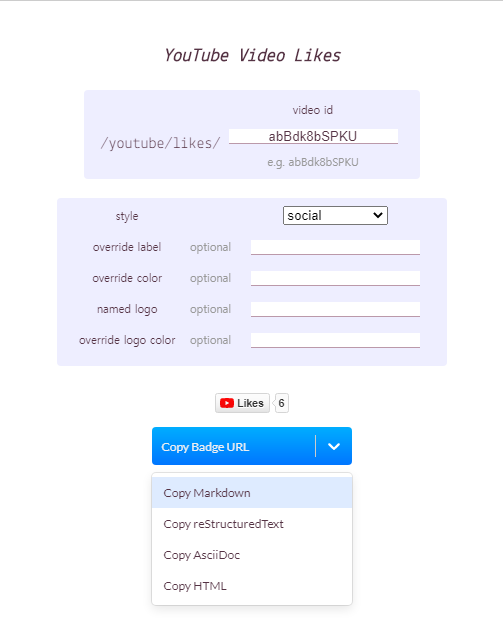

깃헙 프로필 README로 5분만에 만들기
Github Profile README로 5분만에 만들기!
Github가 최근에 자신의 깃허브 페이지 메인에 README.md를 통해서 자신의 프로필을 깃허브에 띄울 수 있는 기능을 추가했습니다.
README를 이용하면 기존의 몇가지 안되는 옵션보다 시각적으로 잘 드러나고 유연하게 꾸밀 수 있고,
Markdown 또한 손쉽게 익힐 수 있어서 잘 이용한다면 개성넘치는 깃허브 메인을 만들어 볼 수도 있겠네요!
우리가 필요한건
- 없어도 좋지만 있으면 더욱 좋은 markdown 기초 지식
- 깃허브 계정
이 두가지면 충분합니다!
깃허브에 README 띄우기
이 기능을 이용하시려면 우선 깃헙에서 해당 기능을 활성화 시켜야합니다.
우선 화면 우측 상단에 위치한 New repository를 눌러서 새로운 저장소를 만들어줄겁니다!
이때 일반 repository가 아니라 프로필 메인용 README repo로 인식되게 해야합니다.
위의 이미지에서 볼 수 있듯이 내 계정의 아이디 를 repo 이름으로 설정해주시면 됩니다.
올바르게 설정하셨다면 위 사진처럼 밑에 초록색 창이 뜨면서 You found a secret!이라고 반겨줍니다.
이떄 당연히 repo는 public으로 해두셔야하고 저는 편의상
- Initialize this repository with a README
를 체크해서 바로 README를 생성하겠습니다!
이제 깃허브 메인에 방금 생성한 repo의 README.md가 깃허브 메인에 뜰겁니다!!🎉🎉
README꾸미기
README.md는 깃허브 마크다운으로 이루어지기 때문에 저희는 이미지, GIF, 이모티콘, 텍스트등을 넣을 수 있고
깃헙 액션을 이용해서 동적으로 데이터를 가져와서 띄워주는등 무궁무진한 활용이 가능합니다.
우선 좋은 저장소를 하나 추천드리자면 Awesome-Profile-README-templates에서 다양한 재밌는 프로필 예제를 접할 수 있고 여기서 영감을 얻을 수 있습니다!
그리고 마크다운이 익숙하지 않으신 분은
https://guides.github.com/pdfs/markdown-cheatsheet-online.pdf
을 읽어보시면 기초적인 마크다운 지식을 습득하실 수 있습니다!
수정 방법
간단합니다!
방금 생성한 자신의 깃허브 REPO에 들어가셔서 수정버튼을 눌러주시면 됩니다!
그리고 사진등 파일 업로드는 Add file을 통해서 깃허브에 올려주신 다음ReadMe에 추가하실 때
꼭 해당 파일의 절대경로를 이용해서 업로드해주세요!
예제 소개
제 깃허브 프로필 같은 경우는
이런식으로 꾸며놓았는데요
이 중에서도 방문수(hits)와 제 깃헙 상태(?)와 밑의 버튼들을 설명해드리겠습니다!(gif는 해당 repo에 업로드하신 후 사진과 같은 방법으로 넣으시면 됩니다)
hits(방문수)
먼저 hits입니다! https://hits.seeyoufarm.com/ 로 들어가신 다음 스크롤을 내리시면 창이 하나 뜹니다.
여기에 깃헙 아이디를 적고 copy를 누르고 붙여 넣으시면 끝입니다!
간단하죠?
Github ReadMe Stats
이 기능은 anuraghazra 개발자의 github-readme-stats를 이용할겁니다!
들어가시면 다양한 예제가 있습니다.
저같은 경우는
1 |  |
와 같이 이미지 마크다운으로 이렇게 넣어주었습니다.
저걸 복사하시고 []안의 이미지 소개 문구, ()안의 링크의 아이디만 본인의 것으로 교체해주시면 문제없이 작동합니다!
Solved.ac
마찬가지로 Solved.ac의 티어를 예쁘게 표시해주고 형식은 마크다운입니다.
1 | [](https://solved.ac/kinetic27) |
여기서 kinetic27을 자신의 아이디로 수정하시면 되겠군요.
버튼들
저는 버튼을 생성할 때 shields.io를 사용했습니다!
사이트 제목 바로 아래 밑줄이 입력창입니다
원하시는 커뮤니티, 웹 사이트 등등을 입력하시면 이미 만들어진 예제들이 나옵니다!
예시로 youtube를 검색한 다음 아무거나 하나를 눌러보겠습니다.

요구하는 칸을 채워준후 markdown 복사 버튼을 누르니
1 |  |
와 같이 마크다운 텍스트가 복사됩니다.
이것도 ReadMe에 넣으시면 잘 작동할겁니다!
끝
지금까지 ReadMe 프로필을 추가하고 활용하는 방법에대해서 알아봤는데요.
생각보다 시간은 오래 안걸리니 바로 적용해보셨으면 좋겠습니다!
제 github에 가시면 제가 어떻게 작성했는지 참고하실 수 있습니다
제 ReadMe raw 파일